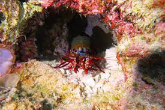

<!DOCTYPE html>
<html lang="en"></html>
<html>
  <head>
    <meta charset="UTF-8" />
    <meta http-equiv="X-UA-Compatible" content="IE=edge">
    <meta name="viewport" content="width=device-width" />
    <title>Exercício sobre Stomatopoda</title>
  </head>
  <body>
    <header>
        <h1>Soco a 80km/h: Conheça o Stomatopoda </h1>
    </header>
    <nav>
        <ul>
            <li>Página Inicial</li>
            <li>Sobre</li>
            <li>Contato</li>
        </ul>
    </nav>
    <article>
        <section>
            <h2>Informações gerais</h2>
                <p>O seu nome científico é <em>Odontodactylus scyllarus</em>. Os estomatópodes são predadores ativos que caçam presas com o auxílio de um sentido de visão muito apurado e capaz de interpretar polarização no espectro ultravioleta e infravermelho). Apresentam uma grande variação de tamanho, que pode ir de poucos milímetros até aproximadamente 40 cm nas espécies maiores. Eles vivem em fundo consolidado, lodoso ou ainda arenoso, onde cavam seus buracos ou aproveitam-se dos orifícios deixados por outros animais para neles se instalar. São animais exclusivamente carnívoros, alimentando-se de camarões, caranguejos, moluscos, peixes e até mesmo outros da mesma ordem.</p>
            <ul>Classificação  científica
                <li>Reino: 	Animalia</li>
                <li>Filo: Arthropoda</li>
                <li>SubFilo: Crustacea</li>
                <li>Classe: Malacostraca</li>
                <li>Subclasse: Hoplocarida</li>
                <li>Ordem:	Stomatopoda</li>
            </ul>
            
        </section>
        <section>
            <h3>Onde eles podem ser encontrados</h3>
            <p>Estomatópodes podem ser encontrados em quase todo o litoral brasileiro, mas não são animais fáceis de se observar pelos seus hábitos mais furtivos. Devem ser manuseados com muita cautela pois são animais preparados para se defender com força, caso sejam incomodados.</p>
            
        </section>
        <section>
            <h3>Fontes</h3>
            <ul>
                <li>https://pt.wikipedia.org/wiki/Stomatopoda</li>
                <li>https://www.nationalgeographic.com/science/article/natures-most-amazing-eyes-just-got-a-bit-weirder</li>
            </ul>
        </section>
    </article>
    <aside>
        <h3>Stomatopoda em ação. Assista!</h3>
        <iframe width="560" height="315" src="https://www.youtube.com/embed/E0Li1k5hGBE" title="YouTube video player" frameborder="0" allow="accelerometer; autoplay; clipboard-write; encrypted-media; gyroscope; picture-in-picture" allowfullscreen></iframe>
    </aside>
  </body>
  <footer>
      <p>"Conteúdo compilado por Juliana Oliveira, 2021".</p>
  </footer>
</html>